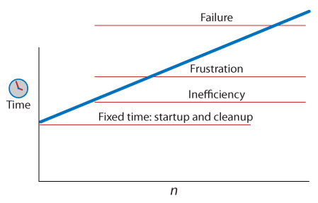
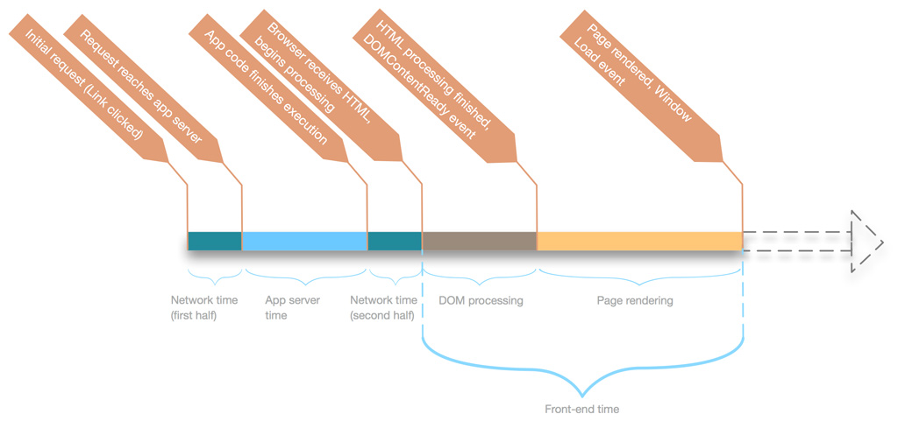
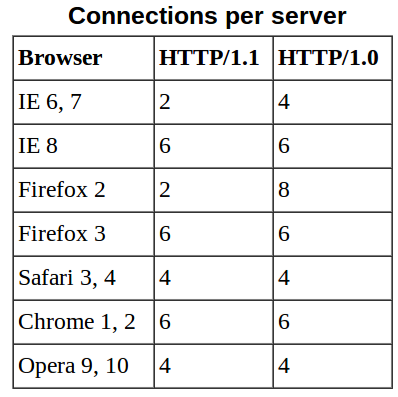

Responsiveness
- 10 sec: Limit for keeping attention

| Module | A | B | C | D |
|---|---|---|---|---|
| Cost | 60% | 4% | 24% | 12% |


Browsers have a limit on the number of connections they open to a single hostname. 
Static resources rarely changes. cache them
<%= image_tag("asa7be.png") %>
=> '/images/asa7be.png?1338397202'
<%= javascript_include_tag "plugins" %>
=> '/javascripts/plugins.js?1335678209'
<%= stylesheet_link_tag "style" %>
=> '/stylesheets/style.css?1554367479'configure expire headers in nginx
location ~* (stylesheets|javascripts|images) {
if (!-f $request_filename) {
break;
}
if ($query_string ~* "^[0-9]{10}$") {
expires max;
}
}xhrObj = new XMLHttpRequest();
xhrObj.onreadystatechange =
function() {
if ( xhrObj.readyState == 4 && 200 == xhrObj.status ) {
eval(xhrObj.responseText);
}
};
xhrObj.open('GET', 'A.js', true); // must be same domain
xhrObj.send('');var scriptElem = document.createElement('script');
scriptElem.src = 'http://anydomain.com/A.js';
document.getElementsByTagName('head')[0].appendChild(scriptElem);Internet Explorer supports the SCRIPT DEFER attribute
< script defer src="A.js" >< /script >< div id="fb-root" >< /div >
< script >(function(d, s, id) {
var js, fjs = d.getElementsByTagName(s)[0];
if (d.getElementById(id)) return;
js = d.createElement(s); js.id = id;
js.src = "//connect.facebook.net/en_US/all.js#xfbml=1&appId=102269883223064";
fjs.parentNode.insertBefore(js, fjs);
}(document, 'script', 'facebook-jssdk'));< /script >$.ready(function() {
$("article.todolist, section.todolists").sortable();
});$(document).on("mousedown", ".sortable_handle", function() {
$("article.todolist, section.todolists").sortable();
});ID's are the most efficient, Universal are the least
#main-navigation { } /* ID (Fastest) */
body.home #page-wrap { } /* ID */
.main-navigation { } /* Class */
ul li a.current { } /* Class *
ul { } /* Tag */
ul li a { } /* Tag */
* { } /* Universal (Slowest) */
#content [title='home'] /* Universal */#main-nav > li { } /* Slower than it might seem */
html body ul li a { } /* freaking disaster!!! */< style >
@import url('a.css');
@import url('b.css');
< /style >< link rel='stylesheet' type='text/css' href='a.css' >
< style > @import url('b.css'); < /style >/
#